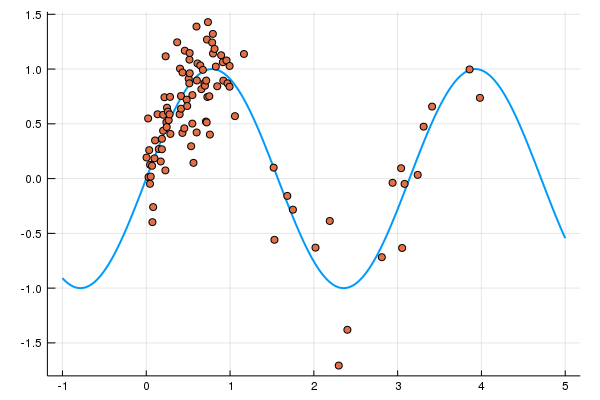
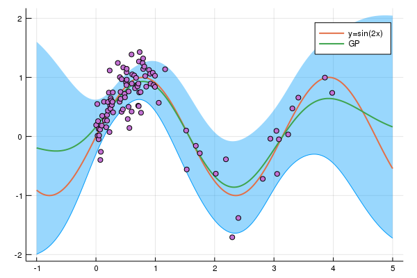
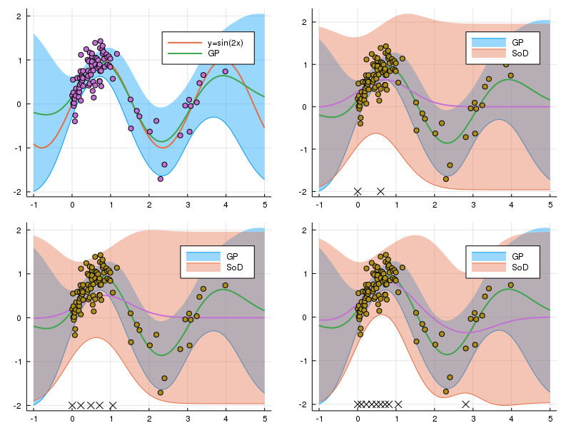
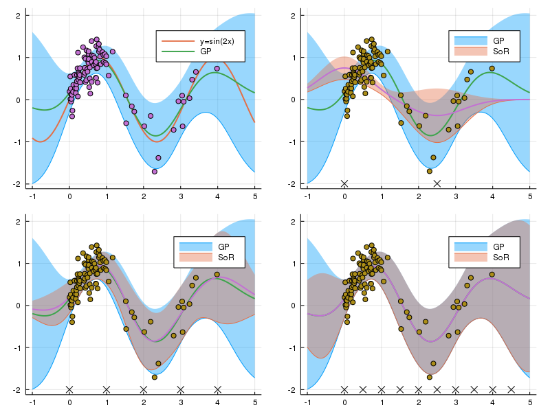
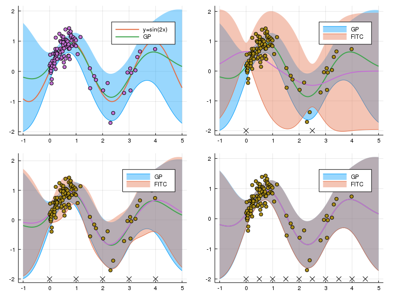
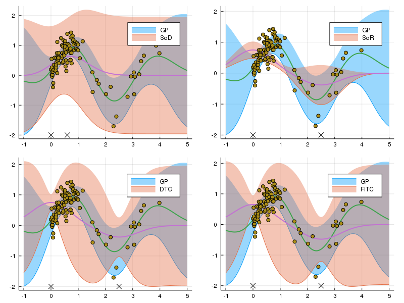
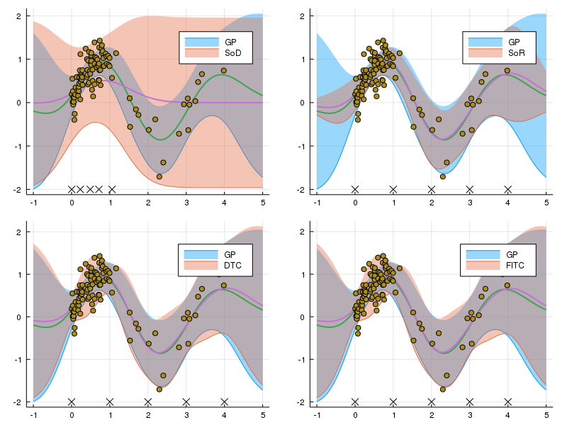
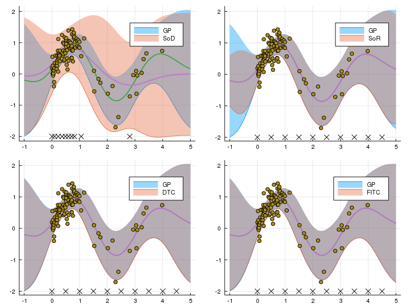

7/5 追記 タイトルが「変数補助法」になっていたのを「補助変数法」に修正
前回書いた 「ガウス過程の補助変数法 (Inducing variable method) を理解する 」の続き。 Julia (v1.0) を使って、前回調べた SoD, SoR, DTC, FITC による回帰の近似結果を実際に確認する。
簡単のため、gp.jl により、
- ガウスカーネルのクラス
GaussianKernelが定義されていて、 - カーネル
kに対してカーネル関数 と相互共分散 がそれぞれker(k, x, y)とcov(k, xs, ys)で計算できる
と仮定する。ということで、まずはライブラリの読み込み。
using Distributions
using Plots
using LinearAlgebra
include("gp.jl")
データは、MLPシリーズ 「ガウス過程と機械学習」の pp.157, 図5.3 補助入力点の配置 と同じサンプルを使う。上記のページに掲載されている、「補助変数法の例 (1次元の場合).」のデータの生成方法を参考にして次のようにデータを100個作成した。
# サンプルデータの作成
xs = vcat(rand(80),rand(20) * 3 .+ 1.0)
sort!(xs)
fx = sin.(xs*2)
ys = fx + rand(Normal(), Base.length(fx)) * 0.3
ts = collect(-1:0.01:5)
plot(ts, sin.(ts*2), lw = 2, label = "")
scatter!(xs, ys, label = "")

にノイズを加えたもので、 の間はデータの密度が高くなっている。ts は、あとで使う分布を予測したい点である。
今回予測するのは、観測値 ではなく、出力値 とする。 (最初にやっていた時は観測値を予測していて、本の図と同じにならなくて混乱していた)
考えるカーネルは、ガウスカーネル である。
観測誤差は としておく。コードの中ではこれを eta で表す。
gk = GaussianKernel()
eta = 1.0
GP
まずは、通常のガウス回帰モデルの場合の予測を確認。予測分布は、
であった。今回は、複数点の同時予測分布からサンプルを発生させることは行わず、各点ごとに予測分布を求めて平均と2.5%, 97.5%点を計算する。
1点の予測分布を計算する関数を実装しよう。自分の実装では、cov は行列を返すため、1x1の行列を first を使ってスカラーにしている。
Kff = cov(gk, xs, xs)
n = Base.length(xs)
Σ = inv(Kff + eta * Matrix{Float64}(I, n, n))
# 1点の予測分布
function gp(t)
Kft = cov(gk, xs, [t])
Ktf = Kft'
Ktt = [ker(gk, t, t)]
gp_mu = Ktf * Σ * ys
gp_cov = Ktt - Ktf * Σ * Kft
Normal(first(gp_mu), sqrt(first(gp_cov)))
end
以下のコードで表示すると、
gp_dists = [gp(t) for t in ts]
gp_mean = mean.(gp_dists)
gp_qt = hcat([quantile.(s, [0.025, 0.975]) for s in gp_dists]...)
function gp_plot()
plot(ts, gp_qt[1, :], fillrange = gp_qt[2, :],
fillalpha = 0.4, label = "", linewidth = 0)
plot!(ts, sin.(ts*2), lw = 2, label = "y=sin(2x)")
plot!(ts, gp_mean, lw = 2, label = "GP")
scatter!(xs, ys, label = "")
end
gp_plot()

(なぜか savefig でpng形式で保存すると fillrange した最小値の部分に線が出てしまった。)
早速それぞれの補助変数法でどれくらい近似できているかを見ていこう。補助入力点が、2点、5点、10点ある場合を考え、点は等間隔に配置されているとする。(SoD を除く)
本質的な部分とは関係ないが、先にプロット用の関数を定義しておく。
function plot_result(gp_mean, gp_qt, mn, qt, ind_xs, label)
plot(ts, gp_qt[1, :], fillrange = gp_qt[2, :],
fillalpha = 0.4, label = "GP", linewidth = 0)
plot!(ts, qt[1, :], fillrange = qt[2, :], fillalpha = 0.4,
label = label, linewidth = 0)
plot!(ts, gp_mean, lw = 2, label = "")
plot!(ts, mn, lw = 2, label = "")
scatter!(xs, ys, label = "")
scatter!(ind_xs, fill(-2, Base.length(ind_xs)),
markershape = :x, label = "")
end
The Subset of Data (SoD)
SoD は他の SoR, DTC, FITC とは違い、任意に補助入力点を選べる訳ではなく元の入力点の部分集合として選ばなくてはいけない。 ここでは、サンプルの左からの順番が等間隔になるように選んだ。(例えば5点選ぶ場合、左から1, 21, 41, 61, 81番目)。
ランダムに選択したり、なるべく等間隔になるように選んだりすればもっとデータがよく代表されるようになり精度が向上するかもしれない。 実装に関しては、GPの入力点を減らしただけである。
function sod_plot(sod_xs, sod_ys)
Kff = cov(gk, sod_xs, sod_xs)
n = Base.length(sod_xs)
Σ = inv(Kff + eta * Matrix{Float64}(I, n, n))
# 各点の分布を計算して信用区間を計算する
function sod(t)
Kft = cov(gk, sod_xs, [t])
Ktf = Kft'
Ktt = [ker(gk, t, t)]
gp_mu = Ktf * Σ * sod_ys
gp_cov = Ktt - Ktf * Σ * Kft
Normal(first(gp_mu), sqrt(first(gp_cov)))
end
sod_dists = [sod(t) for t in ts]
sod_mean = mean.(sod_dists)
sod_qt = hcat(
[quantile.(s, [0.025, 0.975]) for s in sod_dists]...)
plot_result(gp_mean, gp_qt, sod_mean, sod_qt, sod_xs, "SoD")
end
plts = [gp_plot()]
for where_xs in [1:50:100, 1:20:100, 1:10:100]
sod_xs = xs[where_xs]
sod_ys = ys[where_xs]
push!(plts, sod_plot(sod_xs, sod_ys))
end
plot(plts..., layout = (2, 2), size = [800, 600])

左上がGPで、補助入力点のx座標はグラフの下部に示している。データの左から順番で等間隔になるように補助入力点を選ぶと、データがスパースなところの情報が大きく切り捨てられてかなり近似が悪くなるということだろう。
The Subset of Regressors (SoR)
前回考えた、予測分布 が
を用いて
と表されることを思い出すと、SoRは次のように実装できる。us の取り方が SoD と違っていることに注意。
function sor_plot(us)
Kuu = cov(gk, us, us)
Kuf = cov(gk, us, xs)
Kfu = Kuf'
Σ = inv(1 / eta * Kuf * Kfu + Kuu)
function sor(t)
Kut = cov(gk, us, [t])
Ktu = Kut'
sor_mu = 1 / eta * Ktu * Σ * Kuf * ys
sor_cov = Ktu * Σ * Kut
Normal(first(sor_mu), sqrt(first(sor_cov)))
end
sor_dists = [sor(t) for t in ts]
sor_mean = mean.(sor_dists)
sor_qt = hcat(
[quantile.(s, [0.025, 0.975]) for s in sor_dists]...)
plot_result(gp_mean, gp_qt, sor_mean, sor_qt, us, "SoR")
end
plts = [gp_plot()]
for du in [2.5, 1.0, 0.5]
us = collect(range(0, stop = 5 - du, step = du))
push!(plts, sor_plot(us))
end
plot(plts..., layout = (2, 2), size = [800, 600])

式を見て結構大胆な近似だと思っていたが、この例だと、5点の段階でも入力データが存在している範囲での予測はそう悪くない。
The Deterministic Training Conditional (DTC)
DTC, FITCに関しては、SoRの共分散の計算がちょっと変わるだけ。
だったから、SoRの最初の計算部分を
Kuu = cov(gk, us, us)
Kuf = cov(gk, us, xs)
Kfu = Kuf'
Σ = inv(1 / eta * Kuf * Kfu + Kuu)
function dtc(t)
Kut = cov(gk, us, [t])
Ktu = Kut'
Qtt = Ktu * inv(Kuu) * Kut
Ktt = [ker(gk, t, t)]
sor_mu = 1 / eta * Ktu * Σ * Kuf * ys
sor_cov = Ktt - Qtt + Ktu * Σ * Kut
Normal(first(sor_mu), sqrt(first(sor_cov)))
end
に変えるだけでいい。
5点の場合のデータがない部分の分散の情報がかなり改善されているし、10点ではほとんど平均、分散共にぴったり近似できている。 そうなるとFITCを使うまでもないということにもなりかねないが……
The Fully Independent Training Conditional (FITC)
最後にFITC。
を使って
だったから同様に
Kuu = cov(gk, us, us)
Kuf = cov(gk, us, xs)
Kfu = Kuf'
Λ = Diagonal([ker(gk, xs[i], xs[i])
- Kfu[i, :]' * inv(Kuu) * Kuf[:, i] + eta
for i in 1:Base.length(xs)])
Σ = inv(Kuf * inv(Λ) * Kfu + Kuu)
function fitc(t)
Kut = cov(gk, us, [t])
Ktu = Kut'
Qtt = Ktu * inv(Kuu) * Kut
Ktt = [ker(gk, t, t)]
sor_mu = Ktu * Σ * Kuf * inv(Λ) * ys
sor_cov = Ktt - Qtt + Ktu * Σ * Kut
Normal(first(sor_mu), sqrt(first(sor_cov)))
end

あまりDTCと変わらない感じになってしまった。この場合だと追加で計算した分散の対角線部分があまり効いてこなかったのだろう。
手法の比較
最後に、点の数を揃えて比較してみる。図示方法を変えるだけなので、コードは省略。
2点

5点

10点

DTCの段階で十分良く近似できていて、 の分散の対角部分を考えるメリットがあまり感じられないような結果となってしまった。 どのような場合にFITCの近似ががDTCの場合より劇的に向上するのか考えてみたい。
Jupyter Notebook: https://nbviewer.jupyter.org/github/matsueushi/gp_and_mlp/blob/master/ivm.ipynb